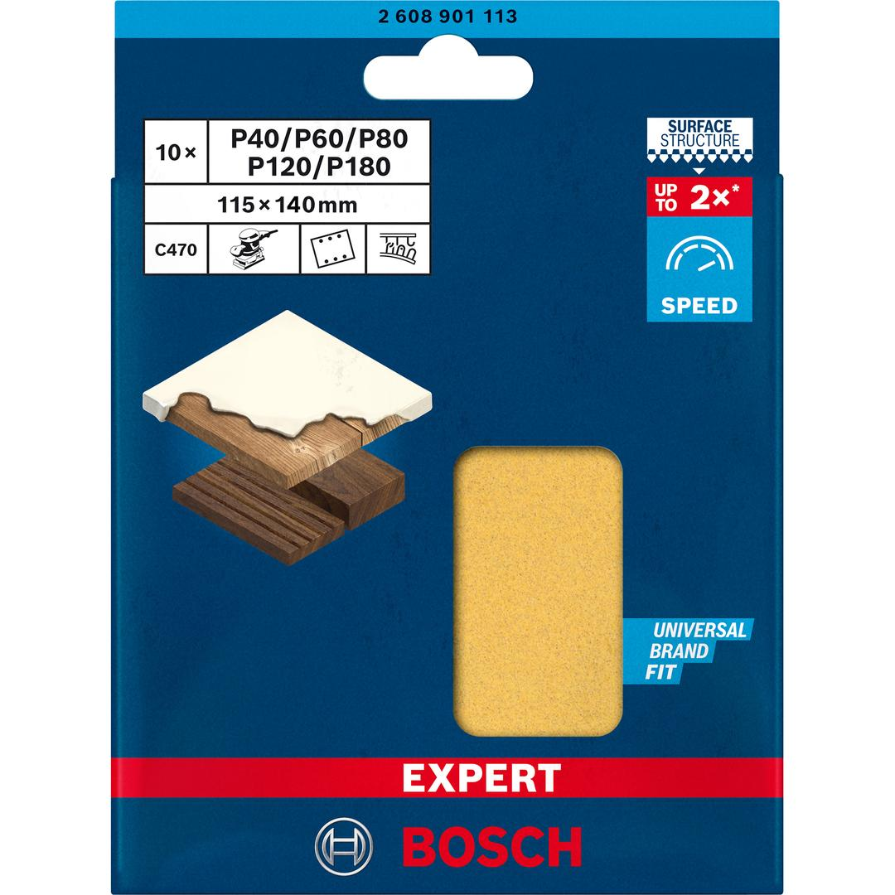
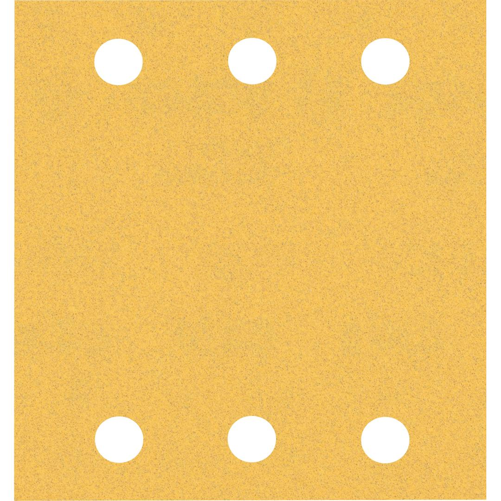

2608901113


| Specification |
115 x 140 mm, 2x40; 2x60; 2x80; 2x120; 2x180 |
| Set description |
Set Content:
2 EXPERT C470 sandpapers 115x140 mm with grit size 40
2 EXPERT C470 sandpapers 115x140 mm with grit size 60
2 EXPERT C470 sandpapers 115x140 mm with grit size 80
2 EXPERT C470 sandpapers 115x140 mm with grit size 120
2 EXPERT C470 sandpapers 115x140 mm with grit size 180 |
| Packaging type |
Paper / Cardboard / Corrugated board - Packaging, tube, with Euro hole |
| Pack quantity |
10 Pcs |
| Minimum order quantity |
5 Pcs |